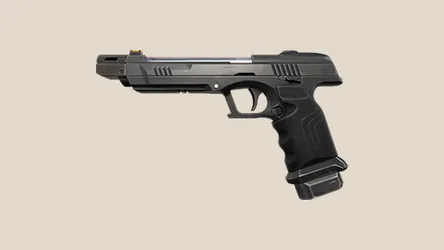

El jugador puede poseer 3 tipos de armas, una pesada, una liviana y una de cuerpo a cuerpo.
El arma cuerpo a cuerpo es el , el cual es el mismo para todos.
Cuchillo

Unica arma cuerpo a cuerpo. El jugador puede moverse ligeramente más rápido con esta arma.
Tiene 2 tipos de ataque, ataque comun y apuñalada.
De arma pesada podemos tener sub-fusiles, rifles de asalto, escopetas, rifles de largo alcance y ametralladoras ligeras.
Y como arma liviana, tenemos varios tipos de arma de mano.
A continuación veremos todo el arsenal disponible, como aparece en el menú de compras:
Armas de mano
Classic

Pistola semi-automática con 2 tipos de disparo, disparo simple y disparo triple.
Shorty

Escopeta recortada de 2 disparos, muy potente en encuentros cercanos.
Frenzy

Pistola automática de corto alcance con alta cadencia de disparo.
Ghost

Pistola semi-automática con silenciador, precisa y efectiva a media distancia.
Bandit
Pistola semi-automática muy potente, pensada para ser un punto medio entre la Ghost y la Sheriff.
Sheriff

Revólver de alto daño, capaz de eliminar de un disparo a la cabeza.
Sub-fusiles
Stinger

Subfusil económico con alta cadencia y eficaz en distancias cortas.
Spectre

Subfusil silencioso, estable y versátil en combate cercano y medio.
Escopetas
Bucky

Escopeta económica con gran daño en distancias cortas.
Judge

Escopeta automática devastadora en combates cercanos.
Rifles de asalto
Bulldog

Rifle automático con modo de ráfaga al apuntar.
Guardian

Rifle semiautomático de alta precisión y gran daño por disparo.
Phantom

Rifle automático silencioso, preciso y ideal para control.
Vandal

Rifle automático de alto daño constante a cualquier distancia.
Rifles de largo alcance
Marshal

Francotirador ligero, económico y letal con disparos precisos.
Operator

Francotirador pesado capaz de eliminar de un solo disparo al cuerpo.
Ametralladoras ligeras
Ares

Ametralladora ligera con gran capacidad de munición.
Odin

Ametralladora pesada con altísima cadencia y penetración.